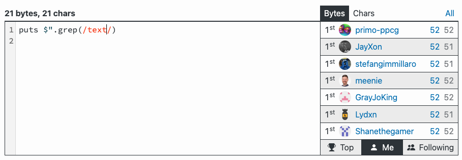

Write a code that takes a string
and returns first word that is repeated.
Words are separated by spaces and are all lowercase.
"dom kot pies okno żyrandol pies dom szafa" -> "pies"
--- ---- ---- ---
Let’s start with ungolfed version.
def first_repeating_word(string)
words = string.split
seen = {}
words.find do |word|
if seen[word]
true
else
seen[word] = true
false
end
end
end
first_repeating_word(
"dom kot pies okno żyrandol pies dom szafa"
) #=> "pies"
183 bytes
This is our starting point.
Let’s see how much we can shrink it!
Let’s apply golf tricks one by one.
Use single letter names for everything.
first_repeating_word -> f
string -> s
words -> a
word -> w
def f(s)
a = s.split
h = {}
a.find do |w|
if h[w]
true
else
h[w] = true
false
end
end
end
128 bytes
Remove unnecessary spaces.
def f(s)
a=s.split
h={}
a.find do|w|
if h[w]
true
else
h[w]=true
false
end
end
end
82 bytes
Use {} blocks instead of do end.
a.find do|w|
end
->
a.find{|w|
}
def f(s)
a=s.split
h={}
a.find{|w|
if h[w]
true
else
h[w]=true
false
end
}
end
78 bytes
Do not use variables
if they are not needed.
a=s.split
a.find{|w|
->
s.split.find{|w|
def f(s)
h={}
s.split.find{|w|
if h[w]
true
else
h[w]=true
false
end
}
end
74 bytes
Use ?: ternary if operator instead of if else end.
if condition
expression1
else
expression2
end
->
condition ? expression1 : expression2
def f(s)
h={}
s.split.find{|w|
h[w]?true:(h[w]=true;false)
}
end
64 bytes
Use lambda -> instead of method definition.
f=->s{
h={}
s.split.find{|w|
h[w]?true:(h[w]=true;false)
}
}
60 bytes
Remove unnecessary new lines.
Other new lines replace with ;
(just for convenience ;-))
f=->s{h={};s.split.find{|w|h[w]?true:(h[w]=true;false)}}
56 bytes
Use shorter truthy expressions than true literal.
Everything except false and nil is treated as true in conditions.
0
1
"f"
:f
{}
[]
# all are truthy
f=->s{h={};s.split.find{|w|h[w]?1:(h[w]=1;false)}}
50 bytes
Use shorter falsy expressions than false literal.
!0
!1
!"f"
!:f
!{}
![]
# all are falsy
Is there a 1 character expression which evaluates to falsy value?
p(1) # prints 1, returns 1
p() # prints nothing, returns nil
p # prints nothing, returns nil
f=->s{h={};s.split.find{|w|h[w]?1:(h[w]=1;p)}}
46 bytes
Use _1, _2 block variables
f=->s{h={};s.split.find{h[_1]?1:(h[_1]=1;p)}}
45 bytes
h[_1]?1:(h[_1]=1;p)
h[_1]?1:!h[_1]=1
f=->s{h={};s.split.find{h[_1]?1:!h[_1]=1}}
42 bytes
h[_1]?1:!h[_1]=1
h[_1]||!h[_1]=1
f=->s{h={};s.split.find{h[_1]||!h[_1]=1}}
41 bytes
h[_1]||!h[_1]=1
!h[_1]=!h[_1]
f=->s{h={};s.split.find{!h[_1]=!h[_1]}}
39 bytes
h={};
->s,**h{} # use ruby keyword arguments
f=->s,**h{s.split.find{!h[_1]=!h[_1]}}
38 bytes
h[_1]=!h[_1]
nil^1 #=> true
true^1 #=> false
h[_1]=h[_1]^1
h[_1]^=1
f=->s,**h{s.split.find{!h[_1]^=1}}
34 bytes
def first_repeating_word(string)
words = string.split
seen = {}
words.find do |word|
if seen[word]
true
else
seen[word] = true
false
end
end
end
f=->s,**h{s.split.find{!h[_1]^=1}}
Evolution of solutions
f=->s{h={};s.split.find{|w|h[w]?true:(h[w]=true;false)}}
f=->s{h={};s.split.find{|w|h[w]?1:(h[w]=1;false)}}
f=->s{h={};s.split.find{|w|h[w]?1:(h[w]=1;p)}}
f=->s{h={};s.split.find{h[_1]?1:(h[_1]=1;p)}}
f=->s{h={};s.split.find{h[_1]?1:!h[_1]=1}}
f=->s{h={};s.split.find{h[_1]||!h[_1]=1}}
f=->s{h={};s.split.find{!h[_1]=!h[_1]}}
f=->s,**h{s.split.find{!h[_1]=!h[_1]}}
f=->s,**h{s.split.find{!h[_1]^=1}}
Single character strings
?a
??
?ę
"a"
"?"
"ę"
SIDEQUEST
Can you parse this?
(Ruby can)
?????:??
?? ? ?? : ??
"?" ? "?" : "?" #=> "?"
Joining arrays
[1,2,3,4]*''
[1,2,3,4]*"x"
[1,2,3,4].join #=> "1234"
[1,2,3,4].join"x" #=> "1x2x3x4"
[1,2,3,4]*?x #=> "1x2x3x4"
Array#uniq
a&a
a|a
a|[]
a.uniq
n-1, n+1
~-n
-~n
n-1
n+1
What’s the point then?
m*(n+1)
m*-~n
Operator methods
"%f".%1.0+0.5
"%f"%(1.0+0.5)
There are many more things like this.
Discovering them is just fun!
The story of one challenge
Usually means one of:
- the problem is simple to solve
- the solution is available publicly
- there is a built-in
1st and 2nd were eliminated.
Searching in the source code I found a method
DidYouMean::Levenshtein.distance("foo", "fo") #=> 1
That lead me to 52 bytes solution
$*.map{p DidYouMean::Levenshtein.distance *_1.split}
I was about to stop here but…
…I found this
$ grep -Ri levenshtein .
(...)
./3.1.0/rubygems/text.rb:
# Vendored version of DidYouMean::Levenshtein.distance from the ruby/did_you_mean gem @ 1.4.0
--------------------------------
It looked like the code in my solution
ü§î
Then I checked this…

- file
rubygems/text.rb is autoloaded
- path to the file is in
$"[20]
- the file contains the longest part of the code
This is what I came up with
eval"$*.map{p#{IO.read$"[20],34,1280}*_1.split}"
IO.read($"[20],34,1280)
" DidYouMean::Levenshtein.distance "
eval"$*.map{p DidYouMean::Levenshtein.distance *_1.split}"
üòà
$*.map{p DidYouMean::Levenshtein.distance *_1.split}
52 bytes
eval"$*.map{p DidYouMean::Levenshtein.distance *_1.split}"
48 bytes
Unfortunately in the current version of rubygems the text.rb file is no longer autoloaded.
This solution doen’t work anymore.